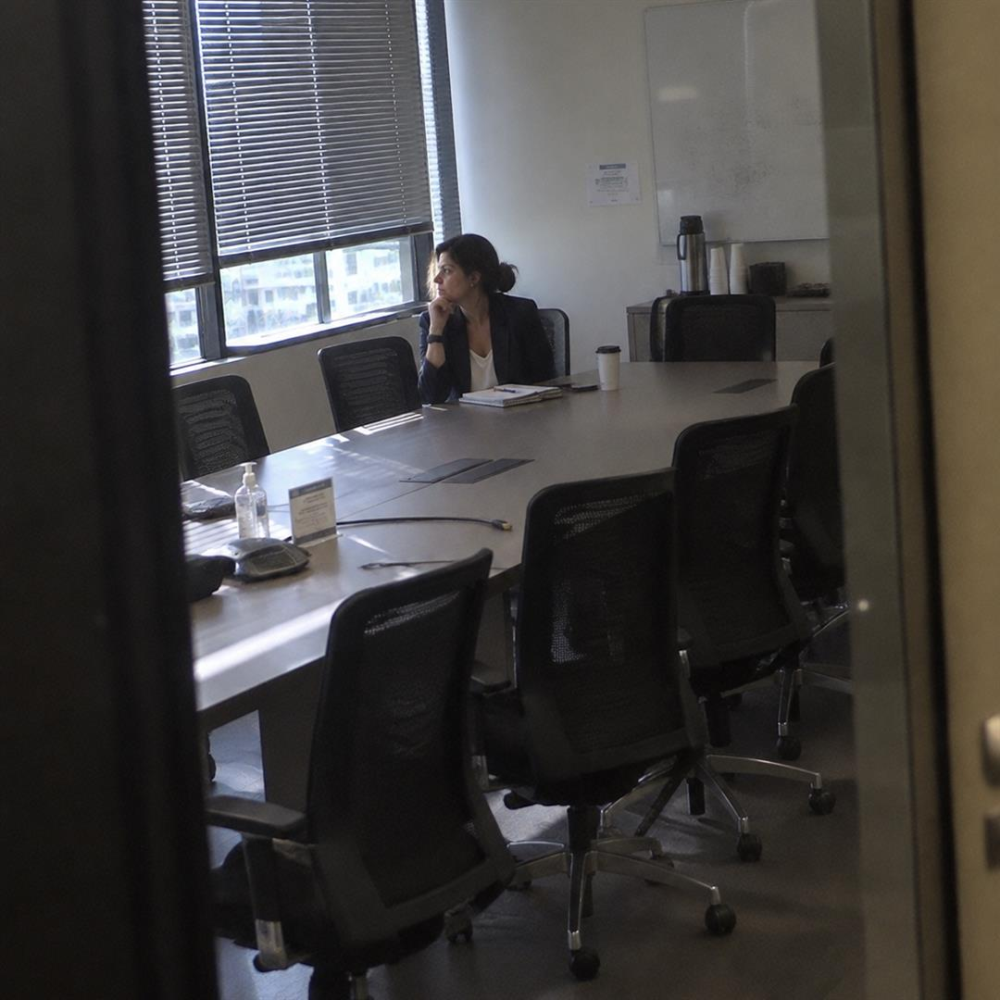
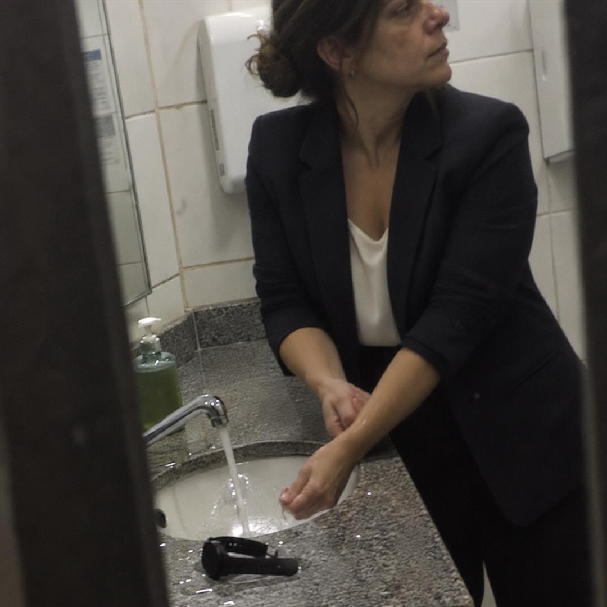
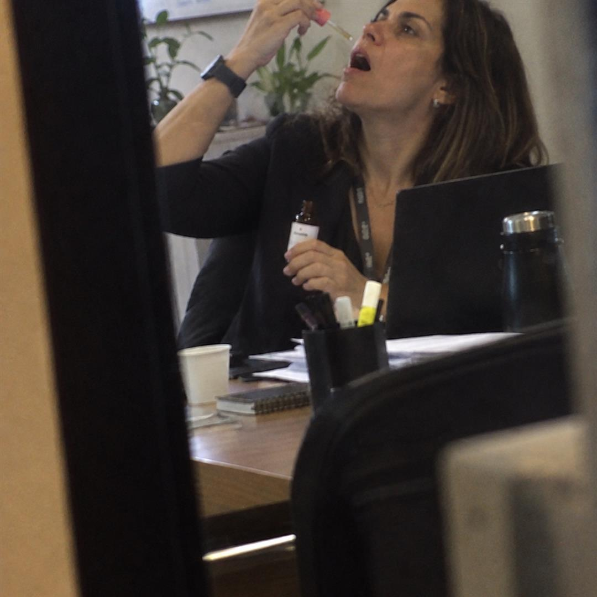
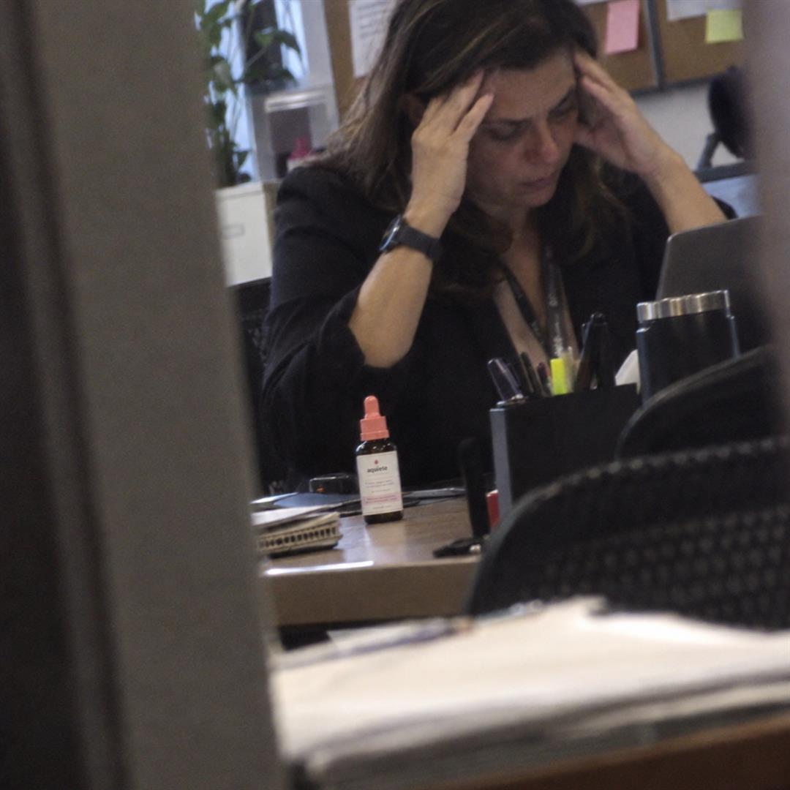

Por que eu sempre saía da reunião pra “buscar água”
Durante quatro anos ninguém do meu trabalho percebeu. Nem eu sabia direito o nome daquilo.
analista de RH · São Paulo
Tinha um copo de plástico no banheiro do sexto andar que era meu. Ninguém sabia. Eu deixava ele atrás da saboneteira, e toda vez que o peito começava a apertar no meio de uma reunião, eu levantava, pedia licença e falava sempre a mesma frase.
“Vou buscar uma água.”
Eu não ia buscar água nenhuma.
Ia pro banheiro, abria a torneira, tirava o relógio (não sei por quê, virou mania) e deixava a água gelada correr no pulso até a mão parar de tremer. Às vezes dois minutos. Às vezes dez. Depois voltava, sentava, e alguém perguntava se tava tudo bem.
“Tudo. Só tava com sede.”

Quinze anos sendo a pessoa calma da sala
Eu trabalho com RH há quinze anos. Sou a pessoa que conduz demissão, que media briga entre gestor e equipe, que fica tranquila quando todo mundo tá nervoso. Durante muito tempo eu fui boa nisso. Boa de verdade.
A primeira vez foi numa terça. Reunião de fechamento de trimestre, nada demais, eu nem ia falar. E do nada o coração disparou. Mão gelada. Aquela certeza de que eu ia desmaiar ali, na frente da diretoria inteira.
Não desmaiei. Pedi licença e fui “buscar água”. Foi a primeira de muitas.
Eu fiz tudo que me mandaram fazer
Baixei aplicativo de respiração e paguei a assinatura anual. Abria no carro, antes de subir. No carro funcionava. Na sala, com doze pessoas olhando pra mim, eu não conseguia nem lembrar quantos segundos era pra segurar o ar.
Tomei chá de camomila, de erva-cidreira, de maracujá. Minha gaveta tinha mais sachê do que caneta. Fiz yoga duas vezes por semana durante um ano inteiro. Ajudava a dormir. No trabalho, zero. Zero mesmo.
E ouvi de tudo. “É só não pensar nisso.” “Toma um vinho à noite.” “Isso é falta de férias.” Minha mãe jurava que era olho gordo.
O problema é que tudo isso pede tempo, silêncio ou um cantinho sozinha. E crise não dá nada disso. Ela chega no meio da reunião, com todo mundo olhando, e te dá trinta segundos.
O dia que eu não consegui voltar
Em março eu tinha que apresentar a pesquisa de clima pra diretoria. Vinte minutos. Eu sabia os números de cor.
No terceiro slide começou. Falei “com licença, vou buscar uma água”, deixei o notebook aberto e fui pro banheiro. Fiquei lá vinte e cinco minutos. Quando voltei, meu gestor já tinha terminado a apresentação no meu lugar.
Ninguém comentou nada. E foi muito pior do que se tivessem comentado.

Naquela noite eu sentei no carro, no estacionamento do prédio, e chorei com a chave na mão, sem ligar o motor. Porque ali eu entendi uma coisa: o problema nunca foi falta de técnica. Eu tinha técnica de sobra. O problema é que nenhuma técnica funciona quando você precisa dela em trinta segundos, no meio de gente, sem poder sair.
O vidrinho que eu achei coisa de tia
Uma amiga de outra empresa, que eu nunca imaginei que passava pela mesma coisa, me contou que andava com um vidrinho de floral na bolsa. Eu ri. Confesso que ri. Achei coisa de tia.
Aí ela me explicou o que eu não sabia. A combinação que ela usava não é novidade nem moda de Instagram. É a mesma que um médico inglês, o Edward Bach, reuniu nos anos 1930 pensando justamente em momento de emergência: o susto, o pânico repentino, o medo de perder o controle na frente dos outros. Cinco florais. Quase cem anos sendo usada pra esse aperto específico.
E o que me convenceu mesmo foi o jeito de usar. Não é pra engolir. São quatro gotas embaixo da língua, e pronto. Embaixo da língua tem muito vaso sanguíneo bem na superfície, por isso essa via é usada quando se quer que algo chegue rápido, sem esperar passar pelo estômago.
Quatro gotas eu conseguia fazer no meio da reunião. Fingindo que era uma bala.
O que ele não é
Não é remédio. Não precisa de receita, não dá sono, não vicia e não mexe em nada que você já toma. Pra mim isso pesou muito, porque eu tinha pavor de ficar dependente de alguma coisa pra conseguir trabalhar.
E eu não vou te vender milagre. Não foi um floral que resolveu minha vida. Comecei terapia no mesmo mês, e isso também fez diferença. O floral é o que eu uso no momento em que aperta. Pros próximos quinze minutos.
A primeira vez
Usei pela primeira vez numa segunda de manhã, antes de uma reunião com o jurídico. Pinguei no carro, segurei embaixo da língua e contei até vinte.
Não senti nada de mágico. Sério. Não veio aquela onda de paz de filme. O que veio foi mais discreto e, pra mim, mais importante: meu ombro desceu. Eu nem sabia que ele tava lá em cima. A respiração destravou um pouco. E eu subi.

Na metade da reunião começou de novo. Menor. Pinguei ali mesmo, disfarçando. E fiquei na sala.
Foi a primeira reunião em quatro anos que eu não saí pra buscar água.
Como foi depois
- Primeira semanaAinda saí da sala duas vezes. Mas voltei em menos de cinco minutos, e não em vinte e cinco.
- Terceira semanaParei de escolher a cadeira perto da porta. Não foi decisão, só percebi depois.
- Segundo mêsApresentei a pesquisa de clima de novo, do começo ao fim. O frasco tava no bolso do blazer e eu usei uma vez, antes de entrar.
- HojeTenho um na bolsa, um na gaveta do trabalho e um no carro. Não uso todo dia. Mas saber que tá ali já muda o jeito que eu entro na sala.

Semana passada teve reunião de fechamento de trimestre. Mesma sala 4. Sentei do lado da janela, longe da porta, e fiquei até o fim.
E o copo de plástico do banheiro do sexto andar? Joguei fora em junho.
Se você também vai “buscar água”
Eu escrevi isso porque passei quatro anos achando que era só comigo. Não é. Se você também tem um copo escondido, uma desculpa pronta ou uma cadeira preferida perto da porta, sabe exatamente do que eu tô falando.
O frasco que eu uso é o Aquiete. É feito em farmácia de manipulação, em lote controlado, com os cinco florais da combinação do Bach. Deixei as opções aqui embaixo pra quem quiser experimentar.
Se as crises são frequentes ou muito fortes, procure um profissional de saúde. O Aquiete é um floral de uso pontual e não substitui acompanhamento nem medicação prescrita.